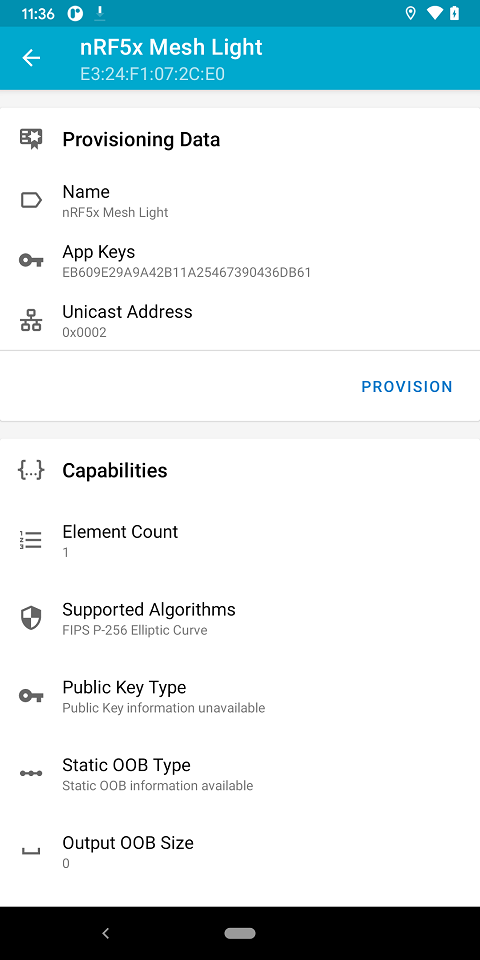
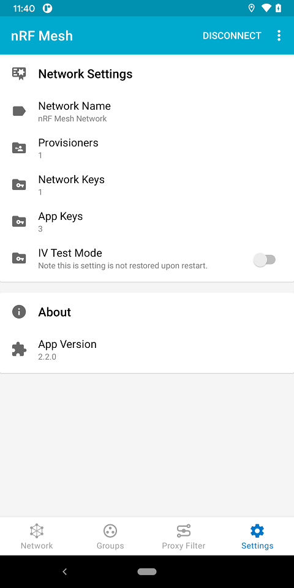
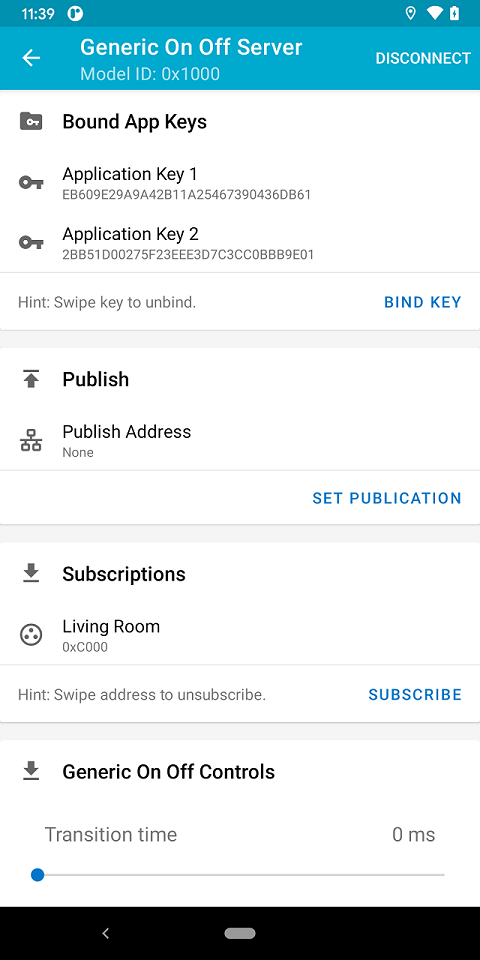
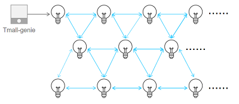

This article introduces the principle and usage of MESH module.
What Is Mesh
BLE MESH is a network protocol based on BLE technology.Devices communicate in a mesh structure,mesh network allows messages to be transmitted between multiple devices int the form of messages.
Main Feature
- Network Structure: Each node can not only communicate directly with other nodes, but also forward data through relay nodes,thus extending the network coverage.
- Low Power: Based on BLE technology and with a dedicated LPN feature to reduce power consume, so it ideal for battery-pwered device.
- Multicast: One node can send information to multiple nodes at same time, which is very useful in group control scene.
- Reliability: Because of the multipath transmit feature, even if one node fail, message can be transmitted through other paths, thus improve the reliability of the network.
- Massive network support: Support large number of nodes(thousands in theory),this make very suitable for IOT.
Directory Structure
├── onmicro.mk
└── src
├── app
│ ├── firms
│ │ ├── omsh_app_firms.c
│ │ ├── omsh_app_firms.h
│ │ ├── omsh_app_firms_mdl.c
│ │ ├── omsh_app_firms_mdl.h
│ │ ├── omsh_app_firms_mdl_demo.c
│ │ └── omsh_app_firms_mdl_demo.h
│ ├── tmall
│ │ ├── omsh_app_tmall.c
│ │ └── omsh_app_tmall.h
│ ├── omsh_app.c
│ ├── omsh_app.h
│ ├── omsh_app_config.h
│ ├── omsh_app_shell.c
│ └── omsh_app_hook.c
int main(void)
main entry of program
Definition: ble_app_simple.c:142
User Guide of FIRMS APP
FIRMS app is used in most application environments,the app provides onoff model demo same as SIG mode opcode,which is convenient for developers to continue to develop on this basis.
FIRMS APP Model Demo
Developers can refer the demo to implement a custom model.The following is related API information:
uint16_t mm_firms_demo_init(bool reset, void *p_env, void *p_cfg);
uint16_t mm_firms_demo_get_env_size(void *p_cfg);
static const omesh_api_model_cb_t mm_firms_demo_cb = {
.cb_rx = mm_firms_demo_cb_rx,
.cb_sent = mm_firms_demo_cb_sent,
.cb_opcode_check = mm_firms_demo_cb_opcode_check,
.cb_publish_period = mm_firms_demo_cb_publish_period
};
static void mm_firms_demo_process_receive_handler(void *params);
- Note
- At the same time,you need add newly model initialization information to omsh_app_firms_mdl.c.
-
The information to be processed is marked with TODO in the demo file.Modify the information as required.
FIRMS APP Test
Firms need to develop their own distribution side or gateway devices, this SDK only supports the node test function, of course,you can also use the thrid-party open source standard SIG MESH APP for test.
Android: https://play.google.com/store/apps/details?id=no.nordicsemi.android.nrfmeshprovisioner&hl=en&gl=US
Apple: https://apps.apple.com/us/app/nrf-mesh/id1380726771

Provisioning with specified device

Provisioned node network information

Node onoff server model information
User Guide of SIG APP
SIG app equipped with PTS software to test and verify mesh stack, and SIG app also equipped with shell commands for interacting with mesh stack.
- Note
- For SIG APP, Profile Tuning Suite(PTS) and PTS dongle are required.
User Guide of TMALL APP
TMALL app is borrowed third party platforms are used to test chip's support for mesh, such as GATT bearer and ADV bearer.
First you need a Tmall-genie device. Which needs to be connected to the Internet for relevant operations.Please refer to the device manual for other configurations.
Second you need a Onmicro mesh lamp module.Which have burn Tmall-genie tripple unit(a set of data issued by alibaba, including MAC address, Product ID and Secret, is used for device authentication.Developers can apply at the Tmall Genie developer website).
The process of voice provision is as follows:
- Wake up Tmall-genie by use voice "你好，天猫" or "天猫精灵",wait it responds.
- Use find device voice instruction by use "找队友" or "发现智能设备",then Tmall-genie begin to scanning the surrounding smart devices(Try to shorten the distance between the smart device and the Tmall-genie to prevent the scan from finding other unexpected devices).
- When the Tmall-genie scans the smart device, it gives a voice prompt. For example "发现 xx 设备，是否需要连接".
- Use voice instruction by "连接",Tmall-genie will start provision operate.The process takes about 10s-30s,and give result of provision operation.

Mesh Topology Diagram
The precautions should be known:
- All light control operations are based on Tmall Genie connected to the Internet.
- The corresponding operation can also be implemented in the Tmall Genie APP.
- Node device can switch whether to sleep function according to configuration.
- Users can customize development application functions according to product conditions.
- Note
- SDK does not provide specific operations on light control, but indicates data transmission in log mode, and you can add it yourself if you are interested.
Default Configuration
The following is default configuration, changes need to be synchronized with library, please contact us.
- Firms app present as default.
- Log default enable,help with debugging and information viewing.
- Gatt proxy,Gatt prov, Relay, Friend, Lpn feature are enable.
- Maximum number of subnets supported: 2.
- Maximum number of models supported: 16.
Second development
Please refer to the apis provided by stack for secondary development Mesh APIs